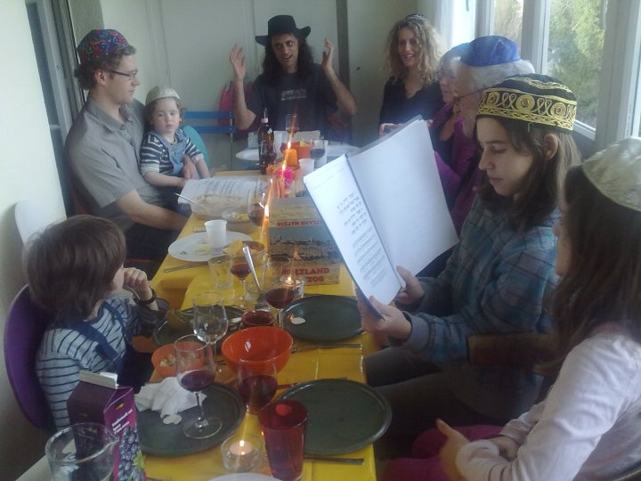

|
|
Cowboy seder
We had the in-laws over for a wonderful (and very fast-paced, due to the Haggadot being in English and the presence of small cousins -- who were however really into Elijah and the afikomen) Seder.

As you can see, we ran out of kippot, so I was forced to lead the seder in a Country-Western accent. Yee-hah!
Although you can see the storebought matzah on the table, we actually also made our own matzah, which was incredibly delicious.
Preheat oven to 250°C
1kg light spelt flour
4 tsp salt
optionally some flax seeds
enough water so that the flour turns into a non-sticky but pliable ball
Mixing small batches of flour and water at a time, roll dough onto baking paper as thin as possible, then put into oven on a metal tray until brown around the edges, something like 5-10 minutes. Take out and balance somewhere around your seder-preparation-disaster-area-kitchen to cool.
If you manage under 18 minutes from mixing in the water until balancing it on the top of a dirty pot or dish-drying rack, it's even kosher!
Posted by benrosen at April 1, 2010 02:16 PM | Up to blogWere there pictures? You say "as you can see..." but I see nothing.
-Mom
Posted by: Karen Rosenbaum at April 1, 2010 08:20 PM../images/spring2010/pessach.2010.jpg
Posted by: Lise A at April 1, 2010 10:36 PMYeah, how come you can't see anything? The image is just above that line!
Posted by: Benjamin Rosenbaum at April 4, 2010 05:58 PMNo, it's not! Thanks to Lise, I got to see it, but there is NO link in the blog.
Posted by: Karen Rosenbaum at April 4, 2010 08:02 PMWorks on all my computers, and Lise presumably got it from the blog. Perhaps you have some kind of suspect-image-blocking software on?
Hands up, how many people see a picture of me in a cowboy hat on this entry?
Posted by: Benjamin Rosenbaum at April 5, 2010 07:22 PMI don't get any picture either. Maybe it doesn't work in Firefox.
dmr
Posted by: dmrose at April 7, 2010 12:17 AMYou are totally right! It didn't work in Firefox. Looks like Chrome and IE both accept backslashes in URL paths, but not Firefox. Ha!
Fixed now.
Posted by: Benjamin Rosenbaum at April 8, 2010 01:03 PM